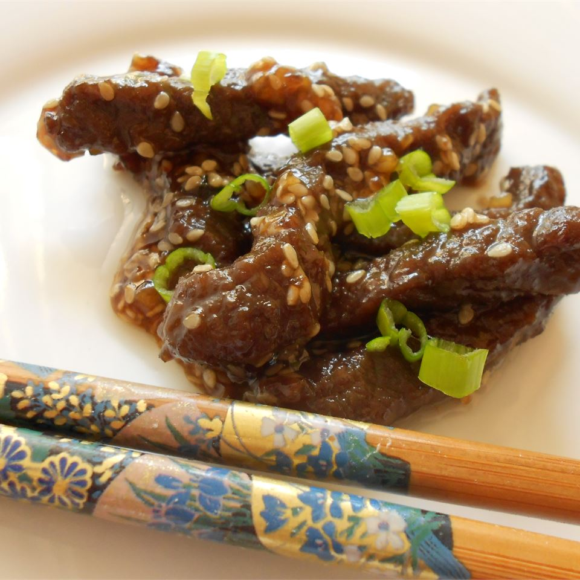

Back
Sesame Beef

Strips of round steak and chopped scallions are marinated with soy sauce and garlic, then quickly stir fried with sesame seeds. Add a little sesame oil to the marinade if you like that flavor. Serve with rice.
Ingredients (2 servings)
- 1/2 pound round steak
- 2 tablespoons soy sauce
- 2 tablespoons white sugar
- 2 tablespoons vegetable oil
- 1 cloves garlic, minced
- 1 green onions, chopped
- 1 tablespoon sesame seeds
Directions
- 1. Mix soy sauce, sugar, oil, garlic, and onions in a large bowl. Set aside.
- 2. Cut steak into strips and add to bowl. Cover and refrigerate overnight, or at least 30 minutes.
- 3. Cook in wok or frying pan until brown, about 5 minutes. Add sesame seeds and cook for additional 2 minutes.
Nutrition Facts (Per Servings)
- 354 calories
- protein 22.2g
- carbohydrates 15.8g
- fat 22.5g
- cholesterol 57mg
- sodium 944.1mg